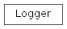
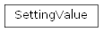

SentimentAnalysis package
Subpackages
- SentimentAnalysis.src package
- Subpackages
- SentimentAnalysis.src.authentication package
- Submodules
- SentimentAnalysis.src.authentication.authentication_strategy module
- SentimentAnalysis.src.authentication.authenticator module
- SentimentAnalysis.src.authentication.hugging_face_strategy module
- SentimentAnalysis.src.authentication.local_strategy module
- SentimentAnalysis.src.authentication.no_authentication_strategy module
- Module contents
- SentimentAnalysis.src.data_sources package
- Submodules
- SentimentAnalysis.src.data_sources.data_source_factory module
- SentimentAnalysis.src.data_sources.data_source_stats_mixin module
- SentimentAnalysis.src.data_sources.data_source_strategy module
- SentimentAnalysis.src.data_sources.data_source_subset_stats module
- SentimentAnalysis.src.data_sources.data_source_suite module
- SentimentAnalysis.src.data_sources.data_source_workflow module
- SentimentAnalysis.src.data_sources.mad_tsc_fact_sheet_mixin module
- SentimentAnalysis.src.data_sources.mad_tsc_strategy module
- SentimentAnalysis.src.data_sources.mad_tsc_subset_stats module
- SentimentAnalysis.src.data_sources.mad_tsc_suite module
- SentimentAnalysis.src.data_sources.mad_tsc_workflow module
- SentimentAnalysis.src.data_sources.mentions module
- Module contents
- SentimentAnalysis.src.data_structures package
- Submodules
- SentimentAnalysis.src.data_structures.checkpoint module
- SentimentAnalysis.src.data_structures.data_collection module
- SentimentAnalysis.src.data_structures.data_frame_column_operations module
- SentimentAnalysis.src.data_structures.data_frame_factory module
- SentimentAnalysis.src.data_structures.data_frame_field_operations module
- SentimentAnalysis.src.data_structures.data_frame_operations module
- SentimentAnalysis.src.data_structures.data_frame_row_operations module
- SentimentAnalysis.src.data_structures.dictionary_chunker module
- SentimentAnalysis.src.data_structures.history module
- SentimentAnalysis.src.data_structures.item_collection module
- SentimentAnalysis.src.data_structures.item_collection_factories module
- SentimentAnalysis.src.data_structures.item_list module
- SentimentAnalysis.src.data_structures.item_series module
- SentimentAnalysis.src.data_structures.my_data module
- SentimentAnalysis.src.data_structures.my_data_frame module
- SentimentAnalysis.src.data_structures.my_dataframe_factory module
- SentimentAnalysis.src.data_structures.my_ordered_dict module
- SentimentAnalysis.src.data_structures.num_series module
- SentimentAnalysis.src.data_structures.str_series module
- Module contents
- SentimentAnalysis.src.decorators package
- Submodules
- SentimentAnalysis.src.decorators.attribute_chain_decorators module
- SentimentAnalysis.src.decorators.communication_error_handling_decorators module
- SentimentAnalysis.src.decorators.data_check_decorators module
- SentimentAnalysis.src.decorators.data_decorators module
- SentimentAnalysis.src.decorators.ensure_implements_decorator module
- SentimentAnalysis.src.decorators.error_handling_decorators module
- SentimentAnalysis.src.decorators.execution_time_decorator module
- SentimentAnalysis.src.decorators.method_check_decorator module
- SentimentAnalysis.src.decorators.object_checking_decorators module
- SentimentAnalysis.src.decorators.program_flow_decorators module
- SentimentAnalysis.src.decorators.time_decorators module
- SentimentAnalysis.src.decorators.trace_decorators module
- SentimentAnalysis.src.decorators.type_check_decorators module
- Module contents
- SentimentAnalysis.src.nlp package
- SentimentAnalysis.src.sentiment_analysis package
- Subpackages
- Submodules
- SentimentAnalysis.src.sentiment_analysis.bloom_fact_sheet_mixin module
- SentimentAnalysis.src.sentiment_analysis.chunk module
- SentimentAnalysis.src.sentiment_analysis.chunk_loader module
- SentimentAnalysis.src.sentiment_analysis.file_loader module
- SentimentAnalysis.src.sentiment_analysis.llm module
- SentimentAnalysis.src.sentiment_analysis.query module
- SentimentAnalysis.src.sentiment_analysis.sentiment_analysis_config module
- SentimentAnalysis.src.sentiment_analysis.sentiment_analysis_workflow module
- SentimentAnalysis.src.sentiment_analysis.sentiment_stats module
- SentimentAnalysis.src.sentiment_analysis.serverless_bloom module
- SentimentAnalysis.src.sentiment_analysis.serverless_bloom_prompt_validation_mixin module
- SentimentAnalysis.src.sentiment_analysis.serverless_bloom_workflow module
- Module contents
- SentimentAnalysis.src.serialization package
- Submodules
- SentimentAnalysis.src.serialization.csv_strategy module
- SentimentAnalysis.src.serialization.data_serialization_mixin module
- SentimentAnalysis.src.serialization.directory module
- SentimentAnalysis.src.serialization.directory_factory module
- SentimentAnalysis.src.serialization.file module
- SentimentAnalysis.src.serialization.file_extension module
- SentimentAnalysis.src.serialization.json_strategy module
- SentimentAnalysis.src.serialization.jsonl_strategy module
- SentimentAnalysis.src.serialization.pkl_strategy module
- SentimentAnalysis.src.serialization.serialization_factory module
- SentimentAnalysis.src.serialization.serialization_strategy module
- SentimentAnalysis.src.serialization.serializer module
- SentimentAnalysis.src.serialization.txt_strategy module
- Module contents
- SentimentAnalysis.src.stats package
- Subpackages
- Submodules
- SentimentAnalysis.src.stats.analyzer module
- SentimentAnalysis.src.stats.frequency_strategy module
- SentimentAnalysis.src.stats.labels module
- SentimentAnalysis.src.stats.length_strategy module
- SentimentAnalysis.src.stats.statistics_factory module
- SentimentAnalysis.src.stats.statistics_strategy module
- Module contents
- SentimentAnalysis.src.utils package
- Submodules
- SentimentAnalysis.src.utils.class_utils module
- SentimentAnalysis.src.utils.data_comparison_utils module
- SentimentAnalysis.src.utils.data_utils module
- SentimentAnalysis.src.utils.dict_sort_utils module
- SentimentAnalysis.src.utils.dict_utils module
- SentimentAnalysis.src.utils.docstring_utils module
- SentimentAnalysis.src.utils.e_mail module
- SentimentAnalysis.src.utils.late_imports module
- SentimentAnalysis.src.utils.list_sort_utils module
- SentimentAnalysis.src.utils.list_utils module
- SentimentAnalysis.src.utils.method_utils module
- SentimentAnalysis.src.utils.print_utils module
- SentimentAnalysis.src.utils.string_search_utils module
- SentimentAnalysis.src.utils.string_utils module
- SentimentAnalysis.src.utils.sys_utils module
- SentimentAnalysis.src.utils.time_utils module
- SentimentAnalysis.src.utils.type_utils module
- SentimentAnalysis.src.utils.user_interaction_utils module
- Module contents
- SentimentAnalysis.src.authentication package
- Submodules
- SentimentAnalysis.src.checkpoint_mixin module
- checkpoint_mixin.py
CheckpointMixinCheckpointMixin.checkpointCheckpointMixin.checkpoint_nameCheckpointMixin.__init__()CheckpointMixin._checkpoint_exists()CheckpointMixin._checkpoint_has_name()CheckpointMixin._create_default_checkpoint_name()CheckpointMixin._get_start_nr()CheckpointMixin._set_checkpoint()CheckpointMixin.checkpointCheckpointMixin.checkpoint_name
- SentimentAnalysis.src.loggable module
- SentimentAnalysis.src.logging_mixin module
- Module contents
- Subpackages
Submodules
SentimentAnalysis.action module
action.py
Version 1.0, updated on 2025-01-09
SentimentAnalysis.constants module
constants.py
Version 1.0, updated on 2024-10-31
- class SentimentAnalysis.constants.Language(value, names=<not given>, *values, module=None, qualname=None, type=None, start=1, boundary=None)[source]
Bases:
StrEnumLanguage class.
This class provides string constants (str) for language codes.
- DE: str = 'de'
- EN: str = 'en'
- ES: str = 'es'
- FR: str = 'fr'
- IT: str = 'it'
- NL: str = 'nl'
- PT: str = 'pt'
- RO: str = 'ro'
- static _generate_next_value_(name, start, count, last_values)
Return the lower-cased version of the member name.
SentimentAnalysis.logger module
logger.py
Version 1.0, updated on 2024-12-06
- class SentimentAnalysis.logger.Logger(name: str, log_file_path: str | None = None)[source]
Bases:
objectThis class provides logging for the entire application.
This class provides a logger that can be used throughout the application. The logger prints log messages to the console and simultaneously stores them in log files for future reference.
Additionally, the logger can be used as a context manager to ensure all handlers are properly flushed and closed before any log files are accessed for reading.
- Parameters:
name (str) – The name of the logger. The name provided should make clear from which module the message comes from. Use ‘__name__’ to pass the name of any module from which you call the logger.
log_file_path (str | None) – The path where the log file should be stored, including the actual file name. If not provided, the path defaults to the LOG_ROOT defined in the settings file, the actual file name being taken from the name provided, adding the log file extension.
- get_logger() logging.Logger:[source]
Returns the configured logger for logging messages.
Examples
- Simple logging: >>> from logger import Logger >>> logger = Logger(__name__, "/path/to/logfile.log").get_logger() >>> logger.info("This is an informational message") - As a context manager for outomatically flushing and closing the handlers after the logging has finished, i.e. when the 'while' block is exited: >>> from logger import Logger >>> with Logger(__name__, "app.log") as logger: ... logger.info("This is an informational message") ...
Notes
Constant logging parameters such as the log level, the maximum size of the log files, and the maximum number of log files of one kind to keep are stored in the settings for easy change.
Utilizing a RotatingFileHandler, the logger restricts the size of each log file and the total number of backup files retained, thereby conserving disk space by automatically overwriting the oldest files once these limits are reached.
- __enter__()[source]
This method is automatically called if the logger is used as a context manager.
To use the logger as a context manager, you need to use a ‘with’ block, the __enter__ method being executed when entering the block.
- Returns:
The configured logger.
- Return type:
logging.Logger
Examples
>>> from logger import Logger >>> with Logger(__name__, "app.log") as logger: ... logger.info("This is an informational message") ...
- __exit__(exc_type, exc_val, exc_tb)[source]
This method is automatically called when exiting the ‘with’ block.
It ensures all handlers are properly flushed and closed.
- __init__(name: str, log_file_path: str | None = None) None[source]
Configures and initializes the logger.
- get_logger() Logger[source]
Returns the configured logger.
This method provides access to the logger configured in the constructor, allowing it to be used for logging messages in the application.
- Returns:
The configured logger.
- Return type:
logging.Logger
Examples
>>> from logger import Logger >>> logger = Logger(__name__).get_logger() >>> logger.debug("This is a debug message") >>> logger.error("This is an error message")
SentimentAnalysis.main module
main.py
Version 1.0, updated on 2025-01-11
- SentimentAnalysis.main.run_prototype(strategy_nr, action: Action, **kwargs) None[source]
Runs the methods of the specified sentiment analysis prototype.
Performs the specified action for English.
- Parameters:
strategy_nr (int) – Number of the prompt engineering strategy to use.
action (Action) – The action to execute.
kwargs (Any) – Any optional keyword arguments needed for the execution of the specified action.
SentimentAnalysis.settings module
settings.py
Version 1.0, updated on 2025-05-01
- This module defines the settings used throughout the project, e.g.
- Data file types and their
Storage locations (‘PATH’)
File extensions (‘EXTENSION’)
Test file names (‘TEST FILE’)
Usage
- Get a project setting anywhere in the project using the function
>>> get_setting(setting_category, setting_name)
- For example, to get the path for CSV files, you can use:
>>> get_setting(SettingCategories.CSV, 'PATH')
- class SentimentAnalysis.settings.SettingCategories(value, names=<not given>, *values, module=None, qualname=None, type=None, start=1, boundary=None)[source]
Bases:
EnumEnumerates categories to organize the different settings for this project.
The Enum type is used for easy access and modification.
- CSV
Small dataframes (DataFrame).
- Type:
Enum
- XLS
Small dataframes (DataFrame) (only for reading data).
- Type:
Enum
- JSON
Data from Dict.
- Type:
Enum
- JSONL
Data from Dict.
- Type:
Enum
- PKL
Big dataframes (DataFrame).
- Type:
Enum
- TXT
Content of string variables.
- Type:
Enum
- NUM
- Type:
int
- CSV = 1
- DTYPE = 11
- JSON = 4
- JSONL = 5
- LOG = 8
- NUM = 9
- PKL = 6
- STR = 10
- TXT = 7
- XLS = 2
- XLSX = 3
- class SentimentAnalysis.settings.SettingValue[source]
Bases:
TypedDictExplicitly set the types of the setting values to ensure type safety.
- BIG_DATA_THRESHOLD: int
- BPE_MERGES: int
- DEFAULT_LANGUAGE: str
- DEFAULT_LENGTH: int
- EXTENSION: FileExtension
- FIRST_ID: int
- FLOAT: str
- INFINITY: int
- INT: str
- INT_NONE: int
- LEVEL: int
- MAX_ITEMS: int
- MAX_STRING_LENGTH: int
- NR_BACKUPS: int
- PATH: str
- SEPARATOR: str
- SIZE: int
- STRATEGY: str
- SentimentAnalysis.settings.get_setting(setting_category: SettingCategories, setting_name: str) str | int | FileExtension[source]
Retrieves the value of a specific setting within a given category.
- Parameters:
setting_category (SettingCategories) – The category of the setting to retrieve.
setting_name (str) – The name of the setting within the category to retrieve.
- Returns:
The value of the requested setting, which can be of type string or FileExtension).
- Return type:
str | int | FileExtension
- Raises:
KeyError – If setting_category or setting_name does not exist.
Examples
To get the path for CSV files, you can use:
>>> get_setting(SettingCategories.CSV, 'PATH')
- SentimentAnalysis.settings.get_settings_category_from_string(category_name: str) SettingCategories[source]
Convert the input string to a SettingCategories enum member
- Parameters:
category_name (str) – The category name to convert into a SettingCategories enum member.
- Returns:
The requested SettingCategories enum member.
- Return type:
SentimentAnalysis.setup module
setup.py
Version 1.0, updated on 2025-05-01
This module contains code that needs to be executed only once to install the libraries needed for the execution of the SentimentAnalysis programm.
Notes
Having cloned the SentimentAnalysis program, you should run this module to install the required libraries for running the programm: Switch to the SentimentAnalysis folder, open a command line interpreter and call the setup module like this:
>>> python -m setup
SentimentAnalysis.type_aliases module
type_aliases.py
Version 1.0, updated on 2024-12-19
- SentimentAnalysis.type_aliases.DictKeyType = str | int | None
A dictionary of lists where the keys are column names and the values lists of column data.
- SentimentAnalysis.type_aliases.OrderedDictOfLists
A dictionary where the keys are prompt ingredients categories and the values are lists of possible values the categories can have.
alias of
OrderedDict[str,Dict[str,List[int|float|str]]]
- SentimentAnalysis.type_aliases.PromptIngredientsType
A dictionary with the prompts, where the keys are consecutive prompt numbers starting from 1 and the values are dictionaries where the keys are position labels and the values are the texts to insert at the indicated positions.
alias of
Dict[str,List[str]]
SentimentAnalysis.view_log module
view_log.py
Version 1.0, updated on 2024-12-06
This is a python script executable from the command line. It prints the contents of a log file, with an option to display the content in reverse order. If a maximum number of lines is not specified, the script will output the newest 10 log messages.
Usage
To view the newest 10 log messages in normal order (newest last): >>> python view_log.py pathyourlogfile.log
To view the newest N log messages in normal order (newest last): >>> python view_log.py pathyourlogfile.log N
To view the messages in reverse order (newest first), add ‘-r’, e.g.: >>> python view_log.py pathyourlogfile.log -r >>> python view_log.py pathyourlogfile.log N -r